Artigos
Guias práticos para planejar sua viagem, com fonte para cada informação.

Foto: Murray Foubister · CC BY-SA 2.0 · Wikimedia Commons
Guia prático
Como chegar a Santa Cruz: voos, ônibus e estradas para percorrer a província
Como chegar a Santa Cruz, na Argentina, de avião, ônibus ou carro: aeroportos e voos atuais, ônibus de longa distância, rodovias nacionais e distâncias-chave para montar a viagem.

Foto: Natifuzz · CC BY-SA 4.0 · Wikimedia Commons
Guia prático
Clima em Santa Cruz: quando viajar, vento e temperaturas
Clima em Santa Cruz por região: temperaturas, chuva, vento e horas de luz para escolher quando viajar pela costa, pelo planalto e pela cordilheira.

Foto: Patricio.lorente · CC BY-SA 4.0 · Wikimedia Commons
Guia prático
Pesca esportiva em Santa Cruz: temporada 2026/27, licenças e onde pescar
Pesca esportiva em Santa Cruz 2026/27: datas, valores oficiais da licença, regras principais e lugares liberados, do rio Gallegos ao lago Strobel.

Foto: Martin St-Amant · CC BY-SA 3.0 · Wikimedia Commons
Guia prático
Cabo Vírgenes: como chegar à pingüinera, ao farol e ao km 0 da Rota 40
Como chegar a Cabo Vírgenes a partir de Río Gallegos: RP 1 de ripio, pingüinera de Magalhães, farol de 1904, km 0 da Rota 40 e quando ir.

Foto: Rocío Lada · CC BY-SA 4.0 · Wikimedia Commons
Guia prático
Parque Nacional Perito Moreno: como chegar, refúgios e trilhas
Guia do Parque Nacional Perito Moreno em Santa Cruz (o parque, não a geleira): como chegar desde Gobernador Gregores, temporada, refúgios, trilhas e registro obrigatório.

Foto: Hector Fabian Garrido · CC BY-SA 4.0 · Wikimedia Commons
Guia prático
Rota 3 em Santa Cruz: trechos, distâncias e paradas
Guia prática da Rota 3 em Santa Cruz: distâncias entre povoados, estado da estrada, combustível, desvios para a costa e cruzamento para o Chile por Monte Aymond.
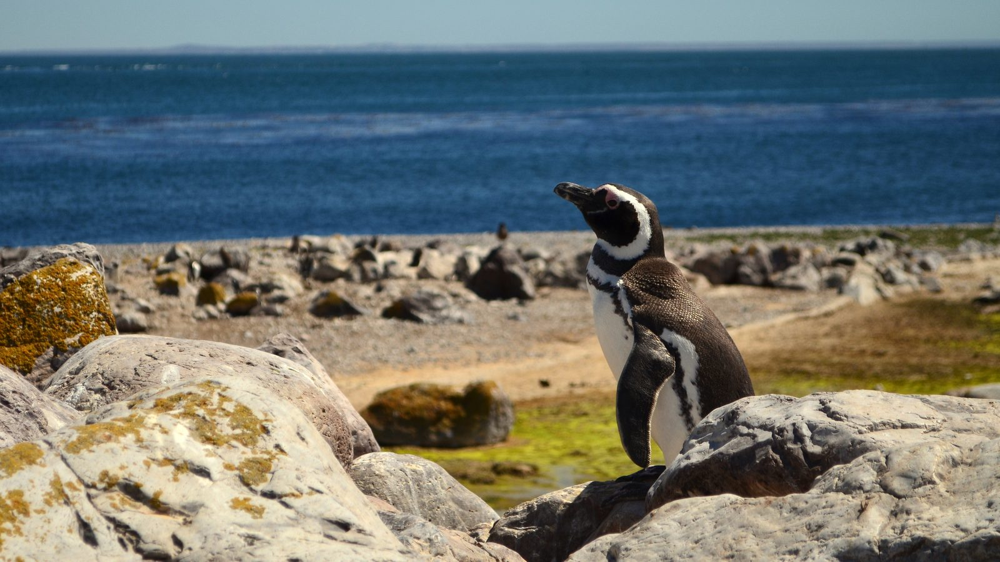
Foto: Andreacav7 · CC BY-SA 4.0 · Wikimedia Commons
Guia prático
Observação de fauna na costa de Santa Cruz: pinguins, toninhas e lobos-marinhos
Onde ver pinguins, toninhas e lobos-marinhos na costa de Santa Cruz: Puerto Deseado, San Julián, Monte León e Cabo Vírgenes. Temporadas e dicas.

Foto: Rodarte · CC BY-SA 3.0 · Wikimedia Commons
Guia prático
Festa Nacional da Cereja em Los Antiguos: guia prático
Festa Nacional da Cereja (Fiesta Nacional de la Cereza) em Los Antiguos: quando é, o que tem, como chegar, onde dormir e dicas para a festa mais doce de Santa Cruz.

Foto: Christoph Strässler · CC BY-SA 2.0 · Wikimedia Commons
Guia prático
O que fazer em El Chaltén além do Fitz Roy: trilhas, lagos e programas para dias de vento
O que fazer em El Chaltén além do Fitz Roy: Laguna Torre, Pliegue Tumbado, Lago del Desierto, Chorrillo del Salto, entrada do parque e programas para dias nublados.
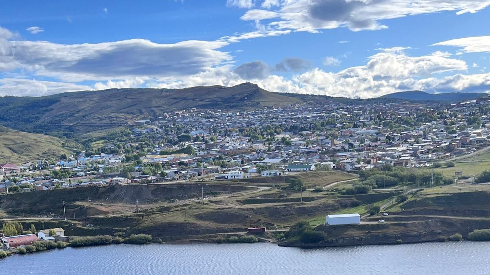
Foto: Ixaiza · CC0 1.0 · Wikimedia Commons
Guia prático
O que fazer em Río Turbio e 28 de Noviembre: carvão, neve, bosques e condores
O que fazer em Río Turbio e 28 de Noviembre: Mina 1, Valdelén, Bosque de Duendes, condores, passagens para o Chile, como chegar e quando ir à Bacia Carbonífera.
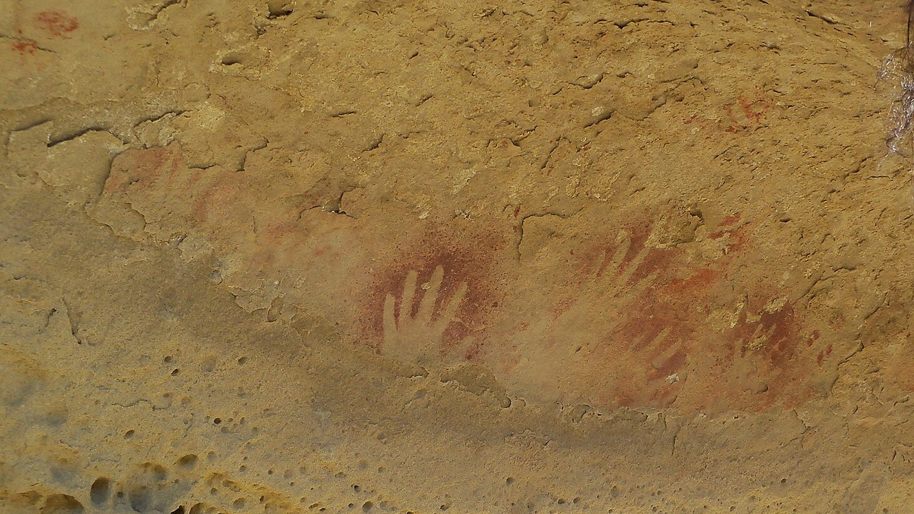
Foto: Carla González · CC BY-SA 3.0 · Wikimedia Commons
Guia prático
Tres Lagos e Lago Cardiel: o que fazer no coração da Ruta 40 em Santa Cruz
O que fazer em Tres Lagos e no Lago Cardiel: Piedra Clavada, arte rupestre, lagos Tar e San Martín, pesca, estradas, combustível e quando ir.
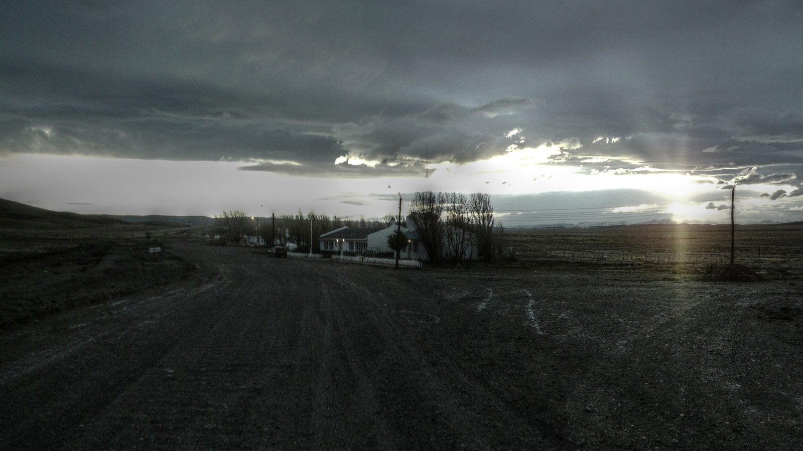
Foto: yellow cab · CC BY 3.0 · Wikimedia Commons
Guia prático
Bajo Caracoles: o que fazer e o que saber sobre a parada-chave da Ruta 40
Bajo Caracoles, parada obrigatória da Ruta 40 em Santa Cruz: combustível, hotel histórico, Cueva de las Manos, Lago Posadas e dicas.
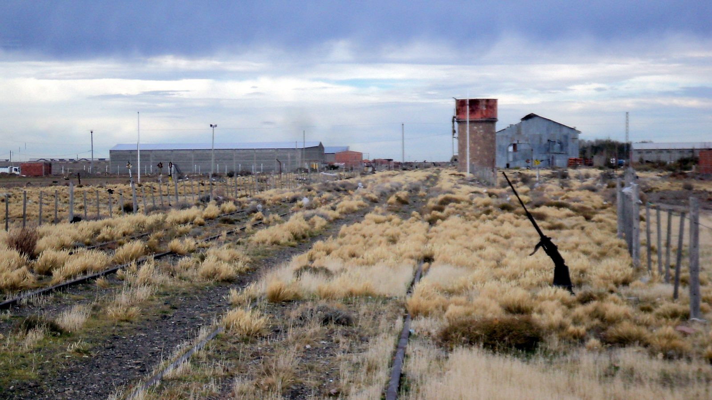
Foto: Gonce · CC BY-SA 3.0 · Wikimedia Commons
Guia prático
O que fazer em Las Heras, Santa Cruz: a cidade da estepe que nasceu na ponta dos trilhos
O que fazer em Las Heras, Santa Cruz: história ferroviária, Passeio Ferroviário, prédios de pedra, praças, Festa da Estepe, como chegar pela RP 43 e dicas de viagem.
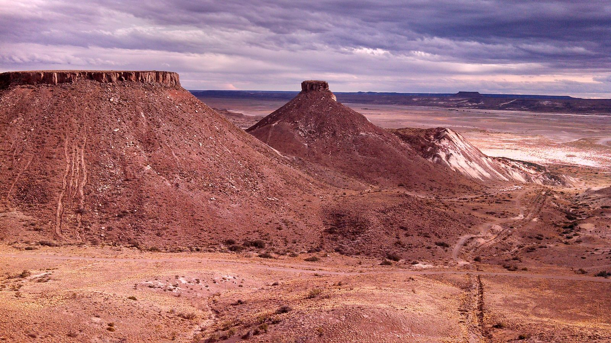
Foto: Eliasexequiel · CC BY-SA 4.0 · Wikimedia Commons
Guia prático
O que fazer em Pico Truncado
O que fazer em Pico Truncado: como chegar a partir de Caleta Olivia, o Bridasaurio, a Laguna de los Patos, o museu, o parque eólico, as Sierras Blancas e passeios pela estepe.
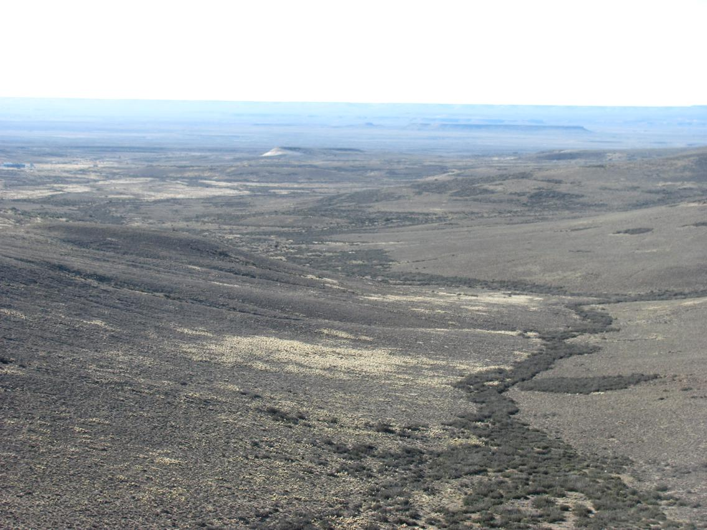
Foto: Santiago matamoro · CC BY-SA 3.0 · Wikimedia Commons
Guia prático
Laguna del Carbón e Gran Bajo de San Julián: como chegar ao ponto mais baixo das Américas
Laguna del Carbón, a cerca de 105 m abaixo do nível do mar: onde fica, como chegar ao mirante do Gran Bajo saindo de Puerto San Julián pela Ruta 3, acesso, geologia e dicas.
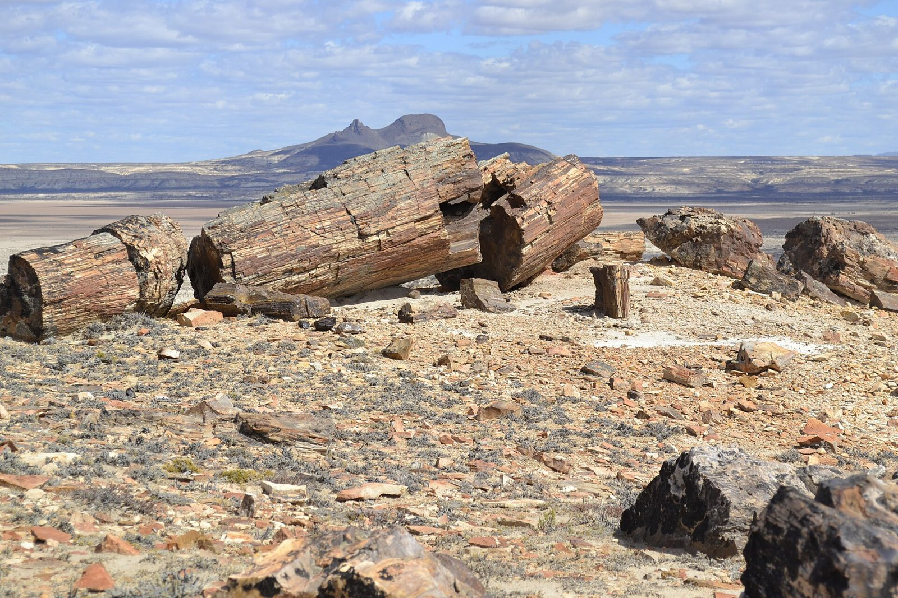
Foto: Cristian imagine · CC BY-SA 4.0 · Wikimedia Commons
Guia prático
Bosques Petrificados de Jaramillo: como chegar e o que ver no parque nacional
Como chegar ao Parque Nacional Bosques Petrificados de Jaramillo pela RN 3 e RP 49, o que ver, trilhas, horários, entrada gratuita, quando ir e o que levar.
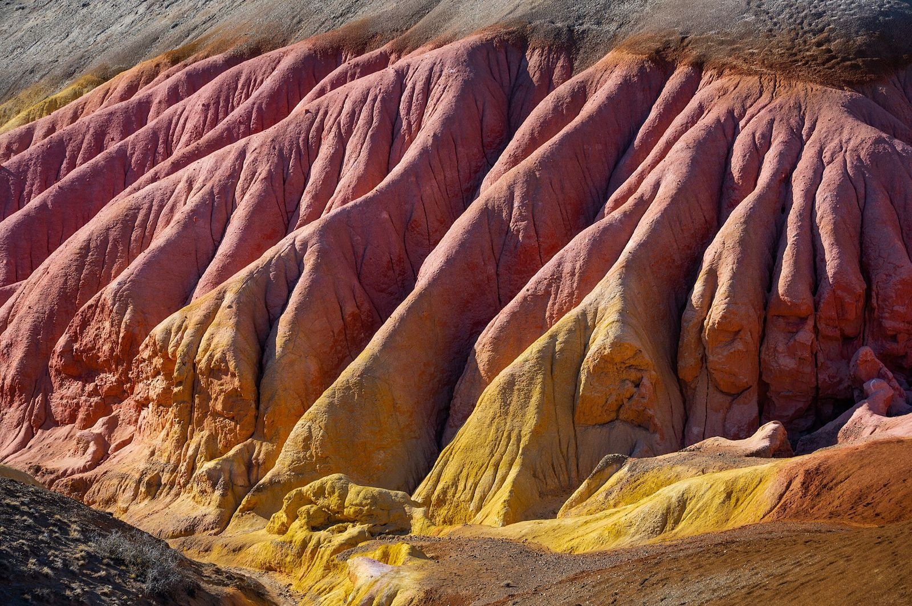
Foto: Horacio Barbieri / ArgentinaTurismo · CC BY 4.0 · Wikimedia Commons
Guia prático
Parque Patagonia: guia do Cañadón Pinturas, trilhas e como chegar
Como chegar ao Parque Patagonia em Santa Cruz: Portal Cañadón Pinturas na Ruta 40, trilhas, entrada, campings, Cueva de las Manos, La Ascensión, El Sauco e dicas.
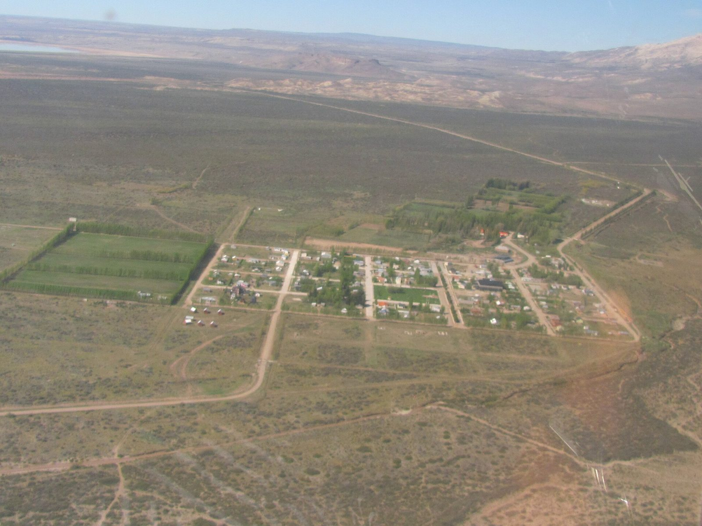
Foto: Ppviorgullo · CC BY-SA 4.0 · Wikimedia Commons
Guia prático
Lago Posadas e Ruta 41: guia para percorrer o noroeste de Santa Cruz
Lago Posadas e Ruta 41: como chegar por Bajo Caracoles ou pelos 155 km de cascalho desde Los Antiguos, o istmo entre os lagos Posadas e Pueyrredón, arte rupestre, pesca e dicas.
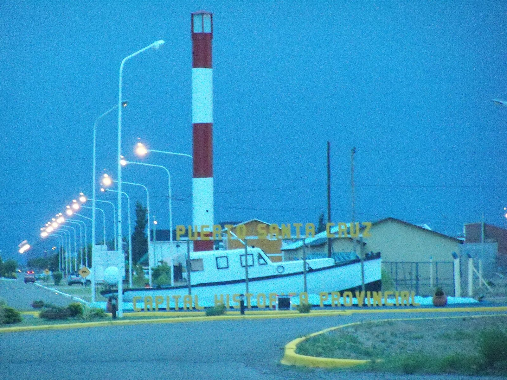
Foto: Carla González · CC BY-SA 3.0 · Wikimedia Commons
Guia prático
O que fazer em Puerto Santa Cruz
O que fazer em Puerto Santa Cruz: orla do estuário, museu Borgialli, lugares históricos, pesca, Isla Leones, Punta Quilla e Monte León. Como chegar e quando ir.
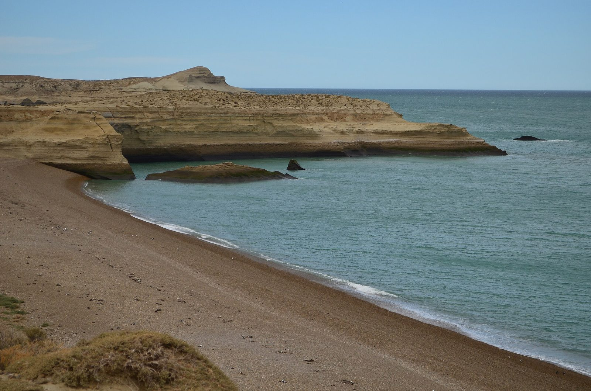
Foto: Andreacav7 · CC BY-SA 4.0 · Wikimedia Commons
Guia prático
O que fazer em Piedra Buena e no Parque Nacional Monte León
O que fazer em Piedra Buena e Monte León: a Isla Pavón e a steelhead do rio Santa Cruz e, a 35 km, a pinguinera, a colônia de lobos-marinhos e a Cabeza del León. Horários, tarifas e como chegar.
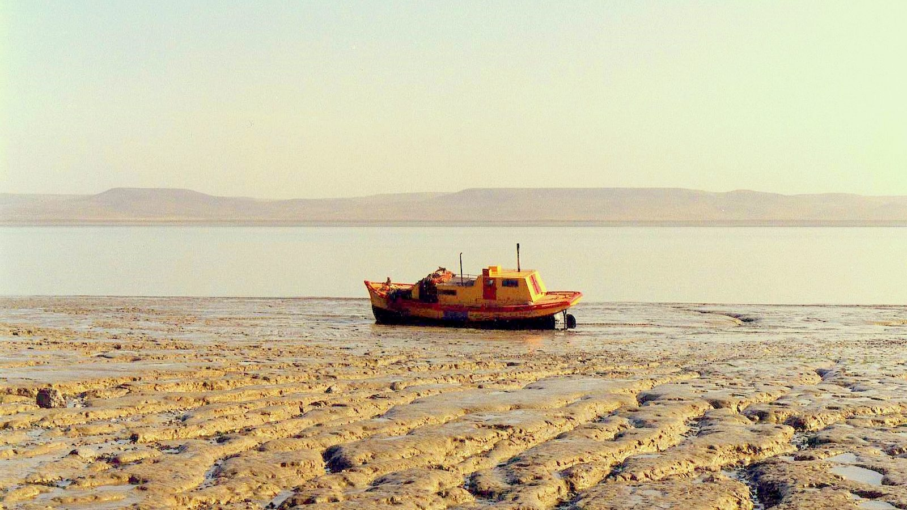
Foto: rodoluca · CC BY-SA 3.0 · Wikimedia Commons
Guia prático
O que fazer em Río Gallegos
O que fazer em Río Gallegos: orla e aves do estuário, centro histórico e museus, Cabo Vírgenes, Laguna Azul e estâncias. Como chegar, quando ir e quantos dias ficar.

Foto: Mikelzubi · CC BY-SA 4.0 · Wikimedia Commons
Guia prático
O que fazer em Caleta Olivia
O que fazer em Caleta Olivia: o Gorosito, a colônia de lobos-marinhos de Punta Sur, o calçadão e as praias do golfo San Jorge, como chegar, quando ir e quantos dias ficar.
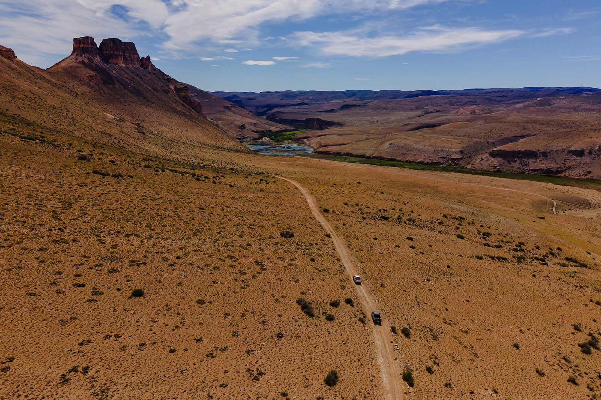
Foto: ArgentinaTurismo · CC BY 4.0 · Wikimedia Commons
Guia prático
O que fazer em Perito Moreno, Santa Cruz
O que fazer em Perito Moreno, Santa Cruz: como chegar, Laguna de los Cisnes, museu Gradin, Cueva de las Manos, Alero Charcamata, clima e dicas.
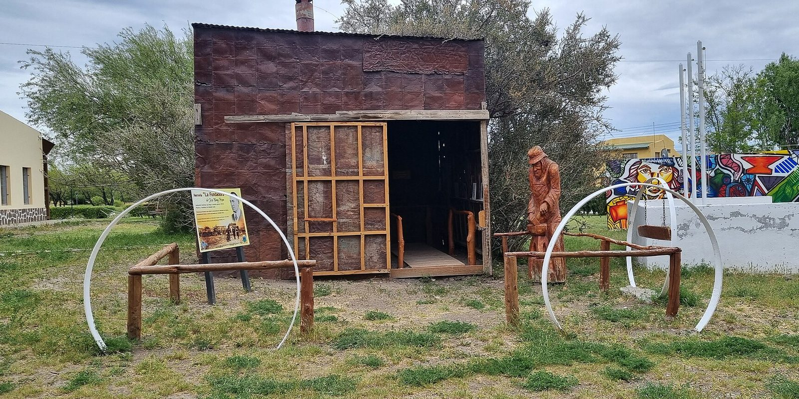
Foto: Natifuzz · CC BY-SA 4.0 · Wikimedia Commons
Guia prático
O que fazer em Gobernador Gregores
O que fazer em Gobernador Gregores: como chegar, lagos Cardiel e Strobel, Cañadón de los Muertos, Parque Nacional Perito Moreno e dicas de viagem.

Foto: Mikelzubi · CC BY-SA 4.0 · Wikimedia Commons
Guia prático
Clima em Puerto Deseado: quando ir
Clima em Puerto Deseado (Santa Cruz): temperaturas do SMN por estação, vento, quando ir à Ría Deseado e à Isla Pingüino, e o que levar. Com fontes oficiais.

Foto: Claudio Elias · Domínio público · Wikimedia Commons
Guia prático
Paso Jeinimeni: como cruzar de Los Antiguos para Chile Chico
Paso Río Jeinimeni entre Los Antiguos e Chile Chico: horários, documentos para argentinos e estrangeiros, documentação do carro, declaração do SAG e dicas.

Foto: Oscar871217 · CC BY 3.0 · Wikimedia Commons
Guia prático
Ruta 40 em Santa Cruz: trechos, combustível e cascalho
Ruta 40 em Santa Cruz: quais trechos ainda são de cascalho, onde abastecer, distâncias entre as cidades, quando viajar e dicas para dirigir.

Foto: Hiroki Ogawa · CC BY 3.0 · Wikimedia Commons
Guia prático
Como chegar à Cueva de las Manos
Como chegar à Cueva de las Manos saindo de Perito Moreno e Bajo Caracoles: acessos de rípio, a caminhada a partir do Portal Cañadón Pinturas, visitas guiadas, horários, onde dormir e dicas.
Foto: Mikelzubi · CC BY-SA 4.0 · Wikimedia Commons
Guia prático
O que fazer em Puerto Deseado
O que fazer em Puerto Deseado: Ría Deseado, Isla Pingüino, Cabo Blanco, museus e Bosques Petrificados. Como chegar e quando ir.

Foto: Gastón Cuello · CC BY-SA 4.0 · Wikimedia Commons
Guia prático
Guia de Puerto San Julián: o que fazer, como chegar e quantos dias ficar
Guia de Puerto San Julián: Nao Victoria, pinguins e golfinhos na baía, Circuito Costeiro, La María, Laguna del Carbón, como chegar, quando ir e dicas.